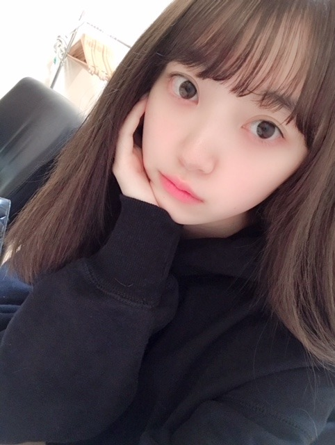
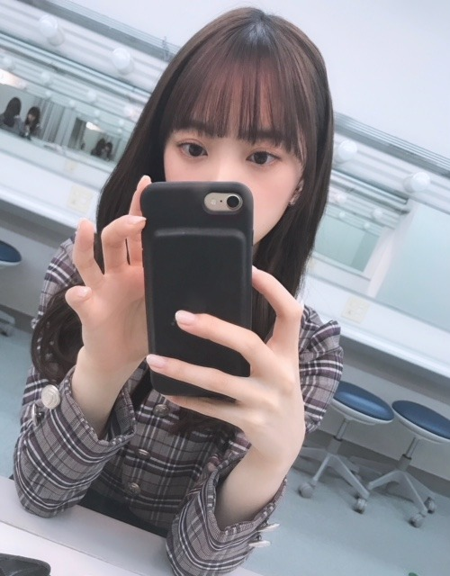
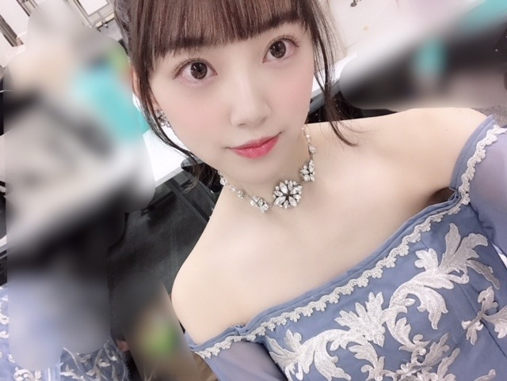

2019/0209Sat犬の毛が目立つよ
私服でパーカーをよく着るのですが
特に黒色のパーカーが好きで
いろんなブランドのを今は集めています☺︎
とにかくラクチンだし
サッとフードを被れば移動中は眠れるし...
有り難い。

(すっぴん失礼します)
(あ、髪きりました)あすかと美月は気づいてくれた
ちなみに携帯ケースも黒で
最近は黒に落ち着くパターンが多いです

夏になったら今まで通り白ばかりになるんだろうけど...
黒の魅力もようやくわかってきて
あー大人やーって思っています☺︎笑
かわいいパーカーがあったら
ぜひ教えてください✨

キラキラ×くすみブルーは
私が世界イチ好きな組み合わせ！
では！
ps.梅干し毎日食べ過ぎて梅干しになりそう...
2019/02/09 18:12
コメント(455)
こんにちは～
今日も、、良く晴れたね～
、、タイトルの、、犬の毛、、は、、(笑)、言い訳に、、ついた、、じゃない、、ついてだね～
、、ついているのは、、犬の毛、、(笑)だって、、(笑)
、、みたいな、、(笑)
、、梅干し、、最近、、よく食べているんだね～
、、梅について語ることも、、夢に(笑)、、ついて語ることも、、同じように、、
、、健康的に、、いいと思うよ～
、、映画の公開、、楽しみだね～
、、じゃあ、、またね～
今日も、、良く晴れたね～
、、タイトルの、、犬の毛、、は、、(笑)、言い訳に、、ついた、、じゃない、、ついてだね～
、、ついているのは、、犬の毛、、(笑)だって、、(笑)
、、みたいな、、(笑)
、、梅干し、、最近、、よく食べているんだね～
、、梅について語ることも、、夢に(笑)、、ついて語ることも、、同じように、、
、、健康的に、、いいと思うよ～
、、映画の公開、、楽しみだね～
、、じゃあ、、またね～
服について書いてたので初めてコメントします！
黒パーカー！自分も黒色とパーカーが好きなので黒パーカーは必然的に多くなります、、、
自分が特にお気に入りなのは、championのリバースウィーブパーカーです！最上位モデルで形はしっかりしてるし着心地いいんですよ〜
デザインで言ったらlad musicianとshareefがダントツで好きです
黒パーカー！自分も黒色とパーカーが好きなので黒パーカーは必然的に多くなります、、、
自分が特にお気に入りなのは、championのリバースウィーブパーカーです！最上位モデルで形はしっかりしてるし着心地いいんですよ〜
デザインで言ったらlad musicianとshareefがダントツで好きです
こんにちは‼︎
ブログ更新、ありがとうございます♪
自分もパーカー大好きです‼︎
この季節に運動する時は、ほぼ99%パーカー着てる(笑)。
トレーナーは一枚も持っていないけど、パーカーはたくさん持ってる。
なんでフードが付くだけでこんなにおしゃれになるんですかね？
不思議です♪
色に関しては、自分も黒を着ることが多いなあ。
これは、季節に限らず、ですけどね♪
ただ、黒は猫の毛がくっついちゃって、それが目立つんですよね…
一生懸命エチケットブラシやガムテープで取るんだけど、家中いたる所に舞っているから、すぐくっついちゃう。
頻繁に掃除機かけたりクイックルワイパーで取り除いたりしているんだけど、焼け石に水ですね(笑)。
まあ、可愛いから許すけど♪
ええと、勝手にタイトルと紐付けしちゃいました‼︎
ワンちゃんにしても猫ちゃんにしても、動物飼っている人にとっては、黒い服あるあるですよね(苦笑)。
そうそう、梅干しを毎日食べているんですね‼︎
いいこといいこと♪
梅干しはクエン酸が豊富なので、疲労回復に効果的です♪
あと、普段から食べていると、夏バテにいいんですって…‼︎
夏バテって体が酸性に偏ってしまう現象らしいのですが、アルカリ性食品の梅干しはそれを正常に保ってくれるらしいです♪
夏が始まるちょっと前ぐらいからよく食べていると効果的とのこと。
それまで継続したいですね‼︎
ではでは、また。
今日も未央奈にとっていい1日になりますように♪
ブログ更新、ありがとうございます♪
自分もパーカー大好きです‼︎
この季節に運動する時は、ほぼ99%パーカー着てる(笑)。
トレーナーは一枚も持っていないけど、パーカーはたくさん持ってる。
なんでフードが付くだけでこんなにおしゃれになるんですかね？
不思議です♪
色に関しては、自分も黒を着ることが多いなあ。
これは、季節に限らず、ですけどね♪
ただ、黒は猫の毛がくっついちゃって、それが目立つんですよね…
一生懸命エチケットブラシやガムテープで取るんだけど、家中いたる所に舞っているから、すぐくっついちゃう。
頻繁に掃除機かけたりクイックルワイパーで取り除いたりしているんだけど、焼け石に水ですね(笑)。
まあ、可愛いから許すけど♪
ええと、勝手にタイトルと紐付けしちゃいました‼︎
ワンちゃんにしても猫ちゃんにしても、動物飼っている人にとっては、黒い服あるあるですよね(苦笑)。
そうそう、梅干しを毎日食べているんですね‼︎
いいこといいこと♪
梅干しはクエン酸が豊富なので、疲労回復に効果的です♪
あと、普段から食べていると、夏バテにいいんですって…‼︎
夏バテって体が酸性に偏ってしまう現象らしいのですが、アルカリ性食品の梅干しはそれを正常に保ってくれるらしいです♪
夏が始まるちょっと前ぐらいからよく食べていると効果的とのこと。
それまで継続したいですね‼︎
ではでは、また。
今日も未央奈にとっていい1日になりますように♪
こんにちは。自分の中でのメインカラーってありますよね。自分はグリーン系が好きです。堀ちゃんはキラキラ×くすみブルー+今は黒にはまってるんですね、
パーカーはチャンピオンなどスポーツブランドものを着ることが自分は多いですが、リラックス用、移動中のお昼寝用とかならユニクロのやつがコスパもよくて、生地もしっかりしていていいんじゃないかなー、と思います。
今日も１日頑張って下さい
パーカーはチャンピオンなどスポーツブランドものを着ることが自分は多いですが、リラックス用、移動中のお昼寝用とかならユニクロのやつがコスパもよくて、生地もしっかりしていていいんじゃないかなー、と思います。
今日も１日頑張って下さい
最近梅干し食べ過ぎで梅に
なりそうな梅未央奈さん
ブログ更新ありがとう⁉︎
すっぴんパーカー可愛いね〜
黒のイメージは無いけど
違和感なく着れてるね⁉︎
2代目箸くんもイメージカラーは
黒かな⁇わらわら
オススメのパーカーは
ステューシーかな？無難だけど・・・
なりそうな梅未央奈さん
ブログ更新ありがとう⁉︎
すっぴんパーカー可愛いね〜
黒のイメージは無いけど
違和感なく着れてるね⁉︎
2代目箸くんもイメージカラーは
黒かな⁇わらわら
オススメのパーカーは
ステューシーかな？無難だけど・・・
ナイキのパーカー可愛いですよ！
自分のオススメです
自分のオススメです
すっぴんいつ見てもかわいい。
ずっと見てたい感じ^^
ずっと見てたい感じ^^
黒
大好きです
黒パーカー結構あるブランドこだわりないけど
買うか
今日夜勤や
明日買ってこよう
髪切ったの気づいた
大好きです
黒パーカー結構あるブランドこだわりないけど
買うか
今日夜勤や
明日買ってこよう
髪切ったの気づいた
私も黒い服とか小物とか大好きで気を抜くと真っ黒なんだけど、飼ってるチワワの毛が目立つ！（笑）コロコロ必須だよね( ᐡ. ̫ .ᐡ )
すっぴん可愛い！！
パーカーがいちばん楽だよね！！
私はユニクロのパーカーがシンプルで好き（笑）
パーカーがいちばん楽だよね！！
私はユニクロのパーカーがシンプルで好き（笑）
梅干しみおなちゃん見たいな〜！乃木中でやらないかな？
黒パーカーなら、”anti social social club”のパーカーが可愛いよ！！
オーバーサイズで着たらめっちゃ可愛いと思う◎
オーバーサイズで着たらめっちゃ可愛いと思う◎
髪切って可愛くなったね！
またブログ更新されるの楽しみにしてます！
またブログ更新されるの楽しみにしてます！
新乃木坂ジャージは、パーカー仕様で希望☆彡
未央ちゃん
ブログ更新ありがとう
髪、切った？(笑)
梅干しも塩分高いから
程々にね
体調気をつけてね
ブログ更新ありがとう
髪、切った？(笑)
梅干しも塩分高いから
程々にね
体調気をつけてね
未央奈 こんにちは！
パーカー！
ラクチンでイイよね。
今年は、無地のシンプルなのが自分的にブーム。
レコメンで着ていた洋服も黒色で物凄ーーーく、大人っぽかったしね。
ずっと紫色だと思ってた。くすみブルーか。なるほど。なるほど。
早く早く 治りますように。
未央奈は未央奈のままで、
最高の笑顔を！
パーカー！
ラクチンでイイよね。
今年は、無地のシンプルなのが自分的にブーム。
レコメンで着ていた洋服も黒色で物凄ーーーく、大人っぽかったしね。
ずっと紫色だと思ってた。くすみブルーか。なるほど。なるほど。
早く早く 治りますように。
未央奈は未央奈のままで、
最高の笑顔を！
かわいいですね
適当に言ってるわけではなく何でも似合うと思うよ！
未央奈、今日も一日お疲れさまでした。
パーカー、僕もよく着てます。黒かグレー、青色のパーカーを着てます。
主な理由なポケットを手に入れられるからだけど…
なんか落ち着くんですよね。
春に向けて、パーカー集めようかな…って思いました。
前回のブログで話していたけど。
改めて「映画 ホットギミック」の公開、おめでとうございます。本当に楽しみです。
完成披露試写会がある際は、できる限り、全国各地を回っていきたいなって思ってます。
未央奈が演じる成田初が、どんな人物で描かれ、演技をするのか。未央奈が全身全霊を込めて頑張った作品を、心から楽しみに、だけど一つの作品としてしっかりとした目で評価をしていきたいと思います。
だから、未央奈に感想を伝える時は、嘘偽りなく正直な感想を伝えたいと思いますので、その時はよろしくお願いします。。。
乃木坂46のメンバーで初めての映画主演の抜擢は、未央奈にとって誇れることだと思うし、これから演技をしていく上で、重要なターニングポイントになる作品だと思います。
未央奈がどんな思いでこの作品と向き合ったのか。またいつの日か聞かせてください。
これまで頑張ってきたから掴めた夢の第一歩。
その姿を踏み出した未央奈が、自信を持って進めることのできる作品になりますように。そう祈ってます。
日々努力している未央奈は、乃木坂46のメンバーとして、女性として本当に素敵だと思います。だからこそ、応援させてください。
じゃあ、最後に。
目の痛みや頭痛。
体調管理は大丈夫そうですか…？
自分が悪いなんて、責めないでくださいね。。
無理はしても良いと思うけど、無茶はしないようにね。
ではでは、ねこでした。
応援してます！
黒は大人の女性という感じですね♪
オテンキののりさん、髪切ったことに気付いてくれますかねー？☆
オテンキののりさん、髪切ったことに気付いてくれますかねー？☆
堀さんって凄い。
ジブリが本当に好きなんですね。
好きだけじゃなく完璧に覚えていてびっくり。
私も大好きだからとっても嬉しい！
堀さんのこともますます大好きになりました。
ジブリが本当に好きなんですね。
好きだけじゃなく完璧に覚えていてびっくり。
私も大好きだからとっても嬉しい！
堀さんのこともますます大好きになりました。
堀ちゃんお疲れさま〜
可愛いかどうか分からんけど…
お猿のパーカーを、どこかで目にしたぞ
堀ちゃん着てそう若しくは欲しいだろうな〜…的なデザインだった
…頑張って探しちくり 健闘を祈る
健闘を祈る
多分、持ってる！とか言われそうだな
可愛いかどうか分からんけど…
お猿のパーカーを、どこかで目にしたぞ
堀ちゃん着てそう若しくは欲しいだろうな〜…的なデザインだった
…頑張って探しちくり
多分、持ってる！とか言われそうだな
ニコルは元気か？？ 笑
これから髪をボブやショートに切る予定はありますか？また見たいです。
立て続けに更新してくれて嬉しい！ありがとう！
すっぴんまで本当に可愛すぎて…透明感！♡
パーカ女子好きです！パーカーをオシャレに着こなせる女子になりたいです︎☺︎ラフなオシャレに憧れがあります。。
未央奈と言えば白のイメージだけど、この前のマリリン・モンローのモノクロ衣装で黒も似合うなぁって思ったし、くすみブルーとキラキラのプリンセス風の衣装もすごく素敵です！
p.s.未央奈が梅干しなら私はアイスになりそうです…アイス好きすぎて（笑）梅干しの蓋でまた怪我しないようにね！笑
すっぴんまで本当に可愛すぎて…透明感！♡
パーカ女子好きです！パーカーをオシャレに着こなせる女子になりたいです︎☺︎ラフなオシャレに憧れがあります。。
未央奈と言えば白のイメージだけど、この前のマリリン・モンローのモノクロ衣装で黒も似合うなぁって思ったし、くすみブルーとキラキラのプリンセス風の衣装もすごく素敵です！
p.s.未央奈が梅干しなら私はアイスになりそうです…アイス好きすぎて（笑）梅干しの蓋でまた怪我しないようにね！笑
未央奈ちゃんこんばんは‼ありがとうございます！楽しみにしてます！頑張ります‼頑張って下さい。ありがとうございます！
こんばんは
冬はまだまだ寒いですね～
体調には気を付けて下さいよ◎
黒を着ている写真がとっても物憂げですね☆
携帯を触ってる写真を見ていると、
とっても電話したい気持ちになりますよ～♪
大人な未央ちゃんはとっても魅力的ですね♡
白が似合う未央ちゃんもまた魅力的ですよ♡
未央ちゃんには色々な魅力がいっぱいです☺
冬はまだまだ寒いですね～
体調には気を付けて下さいよ◎
黒を着ている写真がとっても物憂げですね☆
携帯を触ってる写真を見ていると、
とっても電話したい気持ちになりますよ～♪
大人な未央ちゃんはとっても魅力的ですね♡
白が似合う未央ちゃんもまた魅力的ですよ♡
未央ちゃんには色々な魅力がいっぱいです☺
ブログ更新ありがと！
すっぴん可愛すぎ！
すっぴん可愛すぎ！
未央奈ブログ更新ありがとう！
すっぴん可愛すぎー笑
すっぴん可愛すぎー笑
カーハートの黒パーカー良きよ！
堀ちゃんサイコーに可愛い！
黒も白も何着ても可愛すぎ！
体調は大丈夫？
これからも寒暖差とか異常気象が続くけど頑張って！
心から応援しています！
黒も白も何着ても可愛すぎ！
体調は大丈夫？
これからも寒暖差とか異常気象が続くけど頑張って！
心から応援しています！
未央奈～
雪にも負けず、だいたいぜんぶ展に行けたよー！
素晴らしかった＼(^o^)／
満喫してきました❤️
未央奈とおそろいの白いパーカーだけは絶対欲しくて買えました！！
今度握手会に着ていこうと思います(^^)
雪にも負けず、だいたいぜんぶ展に行けたよー！
素晴らしかった＼(^o^)／
満喫してきました❤️
未央奈とおそろいの白いパーカーだけは絶対欲しくて買えました！！
今度握手会に着ていこうと思います(^^)
未央奈マジで天使！
かわいすぎだぜ最近！
かわいすぎだぜ最近！
堀ちゃん、ブログ更新ありがとう〜
僕もパーカー大好きです！
でも色はグレーが一番だな〜
堀ちゃんはやっぱり、かわいいね〜
堀ちゃん見てると癒されるなー
いつもありがとう〜
堀ちゃん、大好きだよー
僕もパーカー大好きです！
でも色はグレーが一番だな〜
堀ちゃんはやっぱり、かわいいね〜
堀ちゃん見てると癒されるなー
いつもありがとう〜
堀ちゃん、大好きだよー
すっぴんかわいすぎ
何でそんなにかわいいのぉ！！！
何でそんなにかわいいのぉ！！！
みおな！更新ありがと!
僕もパーカー好きだけど、ユニクロのばっかりだなー。黒好きだな。笑
紀州の梅食べてほしーな。
僕もパーカー好きだけど、ユニクロのばっかりだなー。黒好きだな。笑
紀州の梅食べてほしーな。
みおなぁぁぁ
やっぱかわいい...
え！？地毛なの！？
めっちゃ伸びたね！ショートもロングも似合う☆
やっぱかわいい...
え！？地毛なの！？
めっちゃ伸びたね！ショートもロングも似合う☆
すっぴん可愛すぎ！！
vision street wearのパーカー
のりさんと一緒だね！パーカー好き！
のりさんと一緒だね！パーカー好き！
こんばんは！
｢黒は女を美しく見せるんだから｣
っておソノさんが言ってたよ！
黒は好きな色。品があって,深みがあって,ダークサイドで(笑)
黒が似合う女性って素敵です。。
くすみブルーの衣装はとても上品に見えるね、やっぱり寒色系パステルは未央奈によく似合うなぁ。。
すっぴんのレベル高過ぎ！！メイクしてもかわいい、メイクしなくてもかわいいって最強やん！
ps.梅干しはカラダに良いんだって
｢黒は女を美しく見せるんだから｣
っておソノさんが言ってたよ！
黒は好きな色。品があって,深みがあって,ダークサイドで(笑)
黒が似合う女性って素敵です。。
くすみブルーの衣装はとても上品に見えるね、やっぱり寒色系パステルは未央奈によく似合うなぁ。。
すっぴんのレベル高過ぎ！！メイクしてもかわいい、メイクしなくてもかわいいって最強やん！
ps.梅干しはカラダに良いんだって
未央奈ちゃん今日もかわいい
黒色のパーカーも良いけど白色のパーカーも良いよ。
俺も携帯カバー黒色使っているんだ。
黒色は、俺にとってすっごく落ち着く色なんだ。だから、俺も黒色大好きなんだ。
俺も携帯カバー黒色使っているんだ。
黒色は、俺にとってすっごく落ち着く色なんだ。だから、俺も黒色大好きなんだ。
更新ありがとうございます！
応援してます！
堀さんもからの季節ですね
応援してます！
堀さんもからの季節ですね
プログ更新ありがとう！梅干しは体に良いからいいですよ。
赤、青、黄とか、紫、オレンジとかの色物が好きだから自分はまだ子供なのかなぁ。
冬ものはなんでか白黒になるけど
すっぴんも天使だね！
目の疲れも吹っ飛びました！ありがとう！
冬ものはなんでか白黒になるけど
すっぴんも天使だね！
目の疲れも吹っ飛びました！ありがとう！
パーカーいいよね〜
冬はほぼ毎日着てるかも笑
色は黒だけじゃないけど楽よね〜
冬はほぼ毎日着てるかも笑
色は黒だけじゃないけど楽よね〜
みおなちゃん更新ありがとう╰(*´︶`*)╯♡
ワンちゃんの毛が目立つのは黒いパーカーだからかな？笑
パーカー楽ちんで良きですよね（╹◡╹）♡
すっぴん可愛い
髪切ったんだねー！
飛鳥ちゃんと美月ちゃん気づいてくれて嬉しいですな♪(๑ᴖ◡ᴖ๑)♪
黒似合うねー
確かに大人やーってなるかも笑
キラキラ×くすみブルー良きですね
梅干し毎日食べてるんだねー
健康に良さそうですな･:*+.\(( °ω° ))/.:+
ワンちゃんの毛が目立つのは黒いパーカーだからかな？笑
パーカー楽ちんで良きですよね（╹◡╹）♡
すっぴん可愛い
髪切ったんだねー！
飛鳥ちゃんと美月ちゃん気づいてくれて嬉しいですな♪(๑ᴖ◡ᴖ๑)♪
黒似合うねー
確かに大人やーってなるかも笑
キラキラ×くすみブルー良きですね
梅干し毎日食べてるんだねー
健康に良さそうですな･:*+.\(( °ω° ))/.:+
堀ちゃん可愛い！
この間体調崩したみたいだけど無理せず頑張ってください
体ゆっくり休めてください
この間体調崩したみたいだけど無理せず頑張ってください
体ゆっくり休めてください


素材の良さだね〜
でも痩せすぎない様にだけしていて欲しいな、未央奈は痩せすぎて無い時の方がフェイスラインが綺麗だと思うから。個人的な感想だけどね♪
では、今日も明日も素敵な1日でありますように♪